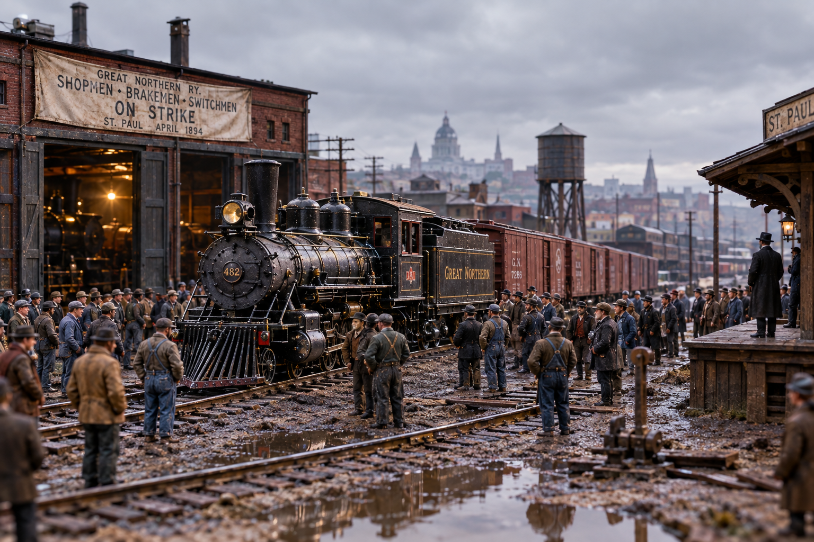

When Labor Beat the Empire Builder: The Great Northern Strike of 1894

I've told you before about James J. Hill, the one-eyed Canadian who laid his own transcontinental to salt water without a dollar of government land grant and never once let it go bankrupt. A hard man, and a good railroader, and I'll not take either back. But there was one spring he lost, and lost plain, and lost to men who swung picks and threw switches for a living. It happened in the wet April of 1894, and it is the only tale I know where the little fellows walked away from a fight with an empire builder holding the money.
Understand first what kind of year it was. The Panic of '93 had come through the country like a washout through a fill. Banks folded, roads went into receivership by the dozen, and every railroad still standing looked at its payroll and reached for the shears. Hill reached three times. Once in August of '93, again in January, and a third cut in March of '94. Add them together and he had taken a hundred and forty-six thousand five hundred dollars a month out of the pockets of the men who ran his railroad. That is real money now. In 1894, on a section hand's wage, that was the difference between eating and not.
A Union Barely Out of the Crate
Now, there had been railroad brotherhoods for years, but they were split up by trade, each looking after its own: engineers with engineers, firemen with firemen, conductors keeping their collars clean. A company could always play one against the other, and generally did. Then in June of '93 a fellow out of Terre Haute named Eugene Debs helped start a thing called the American Railway Union, and its notion was simple and dangerous: everybody who works on the railroad, in one outfit, all together. Wipers and brakemen and clerks and shopmen, same card, same vote.
It was ten months old and had never fought anybody when the Great Northern men came asking. Debs is said to have counseled patience. The men had run out of it. On the thirteenth of April, 1894, they walked.
The road that never went broke, the road that crossed a continent on Hill's own credit, sat down in the mud from St. Paul to Puget Sound because the men who ran it declined to run it.
Eighteen Days of Quiet Iron
And here is the piece that still surprises folks: it held. The whole system stopped. Freight sat. Passenger trains sat. The line that ran the length of the northern tier, over Marias Pass where John Stevens walked alone in the snow and down the Cascade switchbacks, went quiet for eighteen days. The mails moved, because the men saw the sense in not fighting the federal government over a mail sack, and that small piece of judgment mattered more than anybody knew at the time.
Hill did what a man in his position does. He brought pressure, he brought lawyers, he waited for the thing to come apart the way strikes generally came apart in those years. It did not come apart. By the end of April the shippers of the Northwest were howling, the grain was not moving, and the Empire Builder was looking at an empire that had stopped turning over.
So the businessmen of St. Paul and Minneapolis stepped in, and Hill agreed to put it to arbitration before a board of them, with the flour man Charles Pillsbury at the head. On the first of May the board came back, and what it came back with was very close to everything the men had asked. Nearly the whole of that hundred and forty-six thousand five hundred a month went back into the pay envelopes. Debs, a Midwestern union man ten months in business, had walked into a room with James J. Hill and walked back out with the wages.
The Victory That Set the Trap
The men on the Great Northern cheered, and they had every right to. So did everybody else on a railroad in America. The American Railway Union went from a curiosity to a hundred and fifty thousand members inside of a few weeks, more than all the old craft brotherhoods put together. Success will do that. Success will also make a young outfit believe it has learned more than it has.
Because in June, barely a month later, the ARU took up the cause of the workers at Pullman's car works outside Chicago, and boycotted Pullman cars nationwide. That fight went altogether differently. The Pullman sleepers carried the mail, and the General Managers' Association made certain the country knew it. Federal injunction. Federal troops. Debs in a jail cell in Woodstock, Illinois, reading political economy. The union that beat Hill in eighteen days was broken inside of a summer, and it never came back.
So that is the shape of it, and it's a shape you see often enough on the high iron. The one clean win sits right up against the ruin that followed it, and you can't tell the tale of either without the other. But I'll say this for the spring of '94: for eighteen days, on the finest privately built railroad on the continent, the men who did the work held the whole thing still, and the richest man in the Northwest sat down at a table and paid them back what he'd taken. That happened. Whatever came after, that happened.
What Really Happened
The Great Northern Railway cut wages three times during the depression that followed the Panic of 1893: in August 1893, January 1894, and March 1894, totaling roughly $146,500 per month across the workforce. The American Railway Union, founded in June 1893 with Eugene V. Debs as president, called a strike on April 13, 1894.
The strike shut the Great Northern system down for 18 days. James J. Hill agreed to voluntary arbitration before a board of Twin Cities businessmen chaired by flour magnate Charles A. Pillsbury. The award, announced May 1, 1894, restored nearly all of the wage reductions, an almost total union victory and a rare one for labor in that era. ARU membership surged to roughly 150,000.
The victory contributed directly to the union's decision to enter the Pullman Strike that June, a far larger conflict that was broken by federal injunction and troops. Debs was jailed for contempt, and the ARU did not survive. Figures for the wage restoration vary slightly by source; Debs himself testified to the $146,500 monthly figure before the United States Strike Commission in August 1894. The frontier dialect and lantern-keeper framing above are storytelling; the dates, figures, and outcomes are drawn from the historical record.
Sources & Further Reading
- Testimony of Eugene V. Debs to the United States Strike Commission, August 1894
- American Railway Union, Wikipedia
- Pullman Strike, Encyclopaedia Britannica
- Gene Debs and the American Railway Union, Illinois Labor History Society
- Saint Paul's East Side and the Great Northern Railroad Strike of 1894, East Side Freedom Library